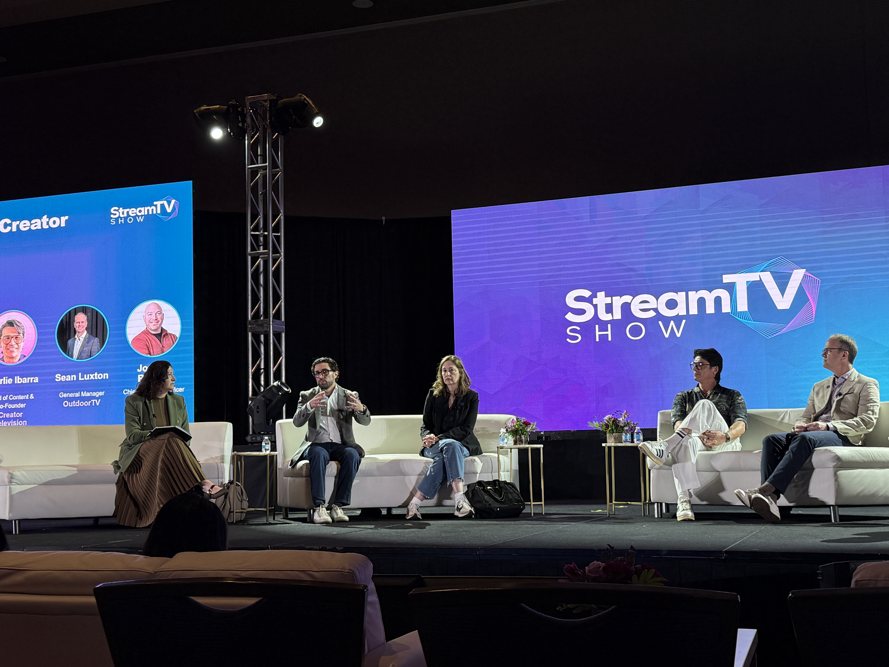
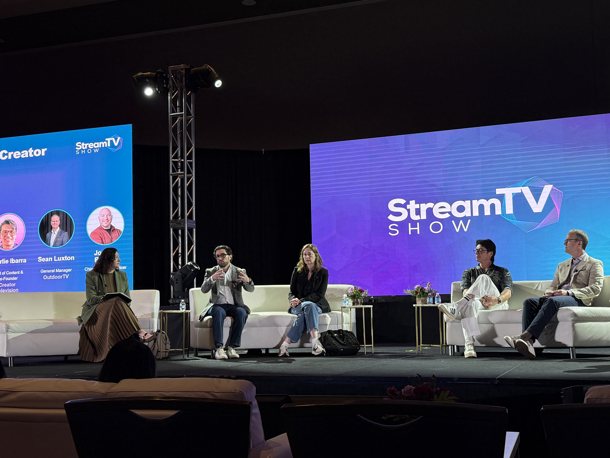

At the Dawn of the Streaming Era: A Digital Media Pioneer’s Journey
In the transformative landscape of digital entertainment, few professionals can claim to have shaped the streaming revolution quite like Jason Coppola. His career reads like a chronicle of the industry’s most pivotal moments, from the early days of HBO GO to the global expansion of today’s streaming giants.
The Foundation Years: Building Digital Expertise
Jason’s journey began in the financial sector, where he cut his teeth at industry stalwarts like Prudential and The Hartford. These early roles laid the groundwork for his understanding of complex systems and enterprise technology. However, it was his transition to HBO in 2013 that would mark the beginning of his true calling in digital media transformation.
The HBO Revolution: From GO to NOW
At HBO, Jason quickly distinguished himself as a forward-thinking product leader. As Manager of Product Development, he pioneered mobile-first features and second-screen experiences that would become industry standards. But it was the launch of HBO NOW, the company’s first standalone streaming service, that truly showcased his ability to navigate uncharted territory. Leading a cross-functional team, Jason orchestrated the service’s deployment across major platforms like Apple, Android, Amazon, and Roku, helping HBO break free from traditional cable dependencies.
His innovative spirit didn’t stop there. As Director of Global Distribution, he pushed boundaries by developing groundbreaking virtual reality experiences for hit shows like Westworld and Game of Thrones, forging partnerships with Meta and HTC that brought HBO content into the emerging metaverse.
The Streaming Wars Era: Architecting Success at Scale
As the streaming landscape evolved, so did Jason’s influence. At WarnerMedia, he played a crucial role in launching HBO MAX, crafting the digital storefront that would attract millions of subscribers. His expertise in user experience and customer acquisition drove a 20% improvement over HBO NOW's performance.
When Paramount (then ViacomCBS) called, Jason answered by leading the international expansion of Paramount+ and Pluto TV into more than 40 markets. His leadership transformed these services into global powerhouses, contributing to a subscriber base exceeding 20 million and driving massive growth in monthly active users.
The Present: Innovating at The CW
Today, as Vice President of Product Management & Design at The CW Network, Jason continues to push the boundaries of digital entertainment. He’s implementing AI-powered recommendation systems, launching FAST channels, and pioneering AI shopping solutions that allow viewers to purchase merchandise directly from broadcast content. Under his leadership, development team velocity has increased by 25%, and the network has seen a 50% increase in application releases.
Beyond the Corporate Sphere
Even during the challenging times of COVID-19, Jason’s entrepreneurial spirit shone through with Ronin Group, LLC, where he attempted to revitalize independent cinema through The Neon Zebra brand. Though the pandemic altered these plans, his commitment to innovation and community impact remained steadfast.
A Legacy of Digital Transformation
Throughout his career, Jason Coppola has consistently demonstrated an uncanny ability to spot emerging trends and transform them into successful products. His journey from financial technology to the pinnacle of streaming media exemplifies the kind of leadership that doesn’t just adapt to change, it creates it. With each role, he has left an indelible mark on the digital media landscape, shaping how millions of people around the world consume and interact with content.
As the media industry continues to evolve, Jason’s blend of technical acumen, strategic vision, and proven leadership continues to drive innovation and set new standards for digital entertainment experiences.


 
